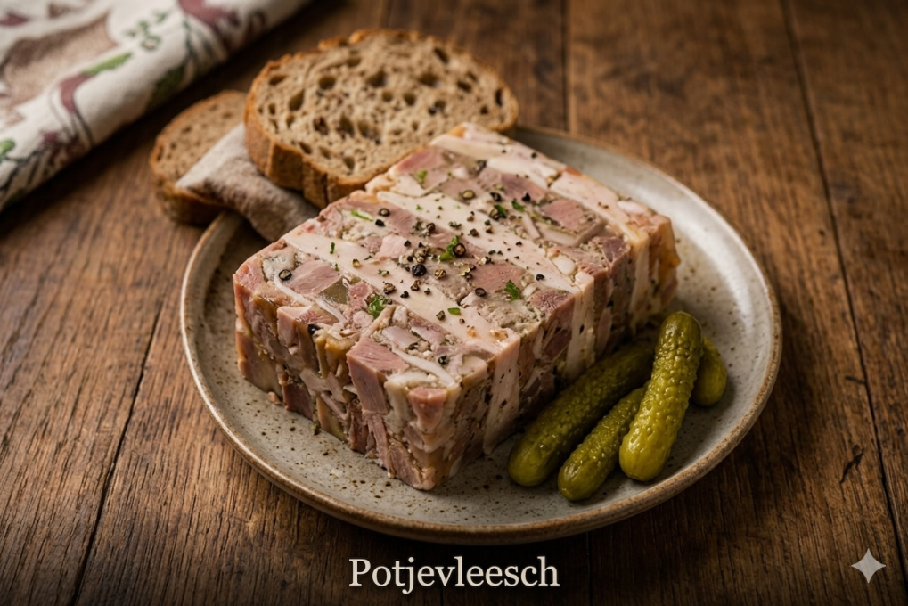
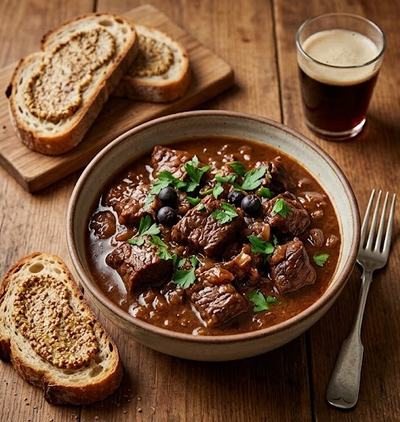
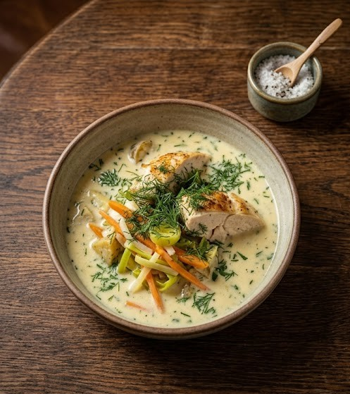

Soupe à l'oignon gratinée
Soupe traditionnelle, croûton, comté fondu
Soupe traditionnelle, croûton, comté fondu

Terrine de viandes en gelée, cornichons, pain de campagne

Tarte feuilletée, poireaux fondants, crème fraîche

Endives, lardons fumés, vinaigrette moutarde

Spécialité nordiste, sauce tartare maison

Carottes, navets, poireaux, bouillon de poule

Mayonnaise à la bière, ciboulette

Bœuf mijoté à la bière brune, pain d'épices, frites maison

Blanquette de poulet ou de poisson, légumes, crème fraîche
Tarte à la pâte brisée, Maroilles affiné, crème fraîche

Mijoté à la bière lambic, moutarde à l'ancienne
Mijotées 4h, purée de céleri-rave
Moules de Bouchot, frites maison, sauce crème
Pot-au-feu à 4 viandes, légumes d'hiver
Légumes vapeur, pommes de terre grenaille
Crêpes farcies jambon et champignons, sauce béchamel
Rôti au beurre, bière ambrée, chou braisé
Perles de sucre caramélisées, crème Chantilly
Pâte briochée, cassonade, beurre noisette
Spécialité 100 % nordiste, caramélisée à la minute
Pain brioché aux raisins, caramel beurre salé
Chocolat noir 72 %, fleur de sel
Biscuits épicés faits maison, boule de glace vanille